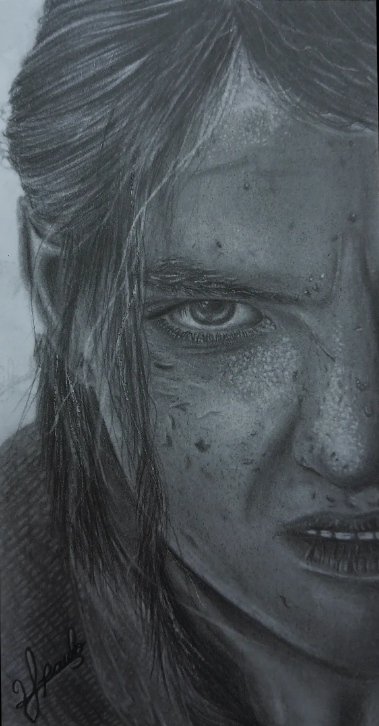

Solicitação
Você explica sua ideia e envia referências, caso tenha.
ARTISTA INDEPENDENTE 01 — 05
2P.
Desenhos tradicionais que exploram contraste, textura e expressão. Do realismo ao universo dos animes, cada peça é feita à mão.

SELEÇÃO DE TRABALHOS 02 — 05
Cada desenho registra uma tentativa, uma técnica e um jeito diferente de enxergar uma imagem.
TRABALHOS SOB PEDIDO 03 — 05
Desenhos físicos, feitos à mão em papel. Escolha um formato para consultar as dimensões e o valor inicial.
REPRESENTAÇÃO ILUSTRATIVA DAS PROPORÇÕES DOS FORMATOS
Trabalhos muito detalhados, realistas ou com composição complexa podem receber orçamento individual. Como referência, a complexidade moderada pode acrescentar R$ 10; trabalhos muito detalhados, R$ 20 ou orçamento individual. Nenhum acréscimo é automático: o valor é avaliado e combinado com você.
COMO FUNCIONA
Você explica sua ideia e envia referências, caso tenha.
Avalio o pedido e informo o preço e o prazo estimado.
50% para confirmar a encomenda e 50% após a conclusão, antes da entrega. O sinal faz parte do valor total.
O desenho é produzido conforme o combinado. Você pode pedir atualizações quando desejar.
Pequenos ajustes podem ser conversados. Mudanças significativas podem alterar preço e prazo.
A entrega é física. Envio ou deslocamento são combinados separadamente; o original é entregue após a quitação.
Nenhuma encomenda será publicada no portfólio sem sua autorização.
Antes da produção, o sinal é devolvido. Se já começou, considera-se o trabalho realizado. Se eu cancelar, o reembolso é integral.
UM POUCO SOBRE O ARTISTA 04 — 05
2PSou 2P, artista autodidata. Trabalho principalmente com desenho tradicional, explorando técnicas como realismo, anime, pontilhismo e hachura.
Gosto de experimentar diferentes formas de construir imagem — seja pela precisão dos detalhes, pelo contraste ou pela repetição de pequenos traços e pontos.
VAMOS TIRAR A IDEIA DO PAPEL 05 — 05
Envie uma mensagem contando o que imaginou. Se tiver referências, pode encaminhá-las junto com a descrição.
Instagram ↗O endereço do perfil será adicionado em breve.
DESENHO TRADICIONAL
FEITO À MÃO
COM INTENÇÃO.